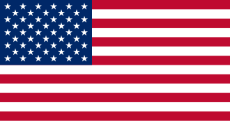

Razas Bos indicus
GUZARAT
Fin zootécnico: Doble propósito, (carne y leche)
Características productivas: Producción de carne de calidad y una moderada producción de leche. Es una raza longeva con buen temperamento, que se utiliza también para trabajo y para mejorar genéticamente otras razas, gracias a su capacidad de ganancia de peso y longevidad.
Regiones en Colombia: Orinoquía(Llanos orientales). la costa del pacífico y los valles interandinos del Magdalena y el Cauca
Origen: 
GYR
Fin zootécnico:Leche
Características productivas: Buena producción láctea para climas cálidos; leche con buen contenido de grasa; animales resistentes al calor y a enfermedades tropicales; cabeza con frente abombada, orejas largas y piel suelta.
Regiones en Colombia: Antioquia, Tolima, Cundinamarca y la costa Caribe (cerca de Montería)
Origen: 
NELORE
Fin zootécnico: Carne
Características productivas: Gran rusticidad, enorme tolerancia al calor y a insectos, buena eficiencia alimenticia en pastoreo extensivo, parto fácil, buena conformación cárnica en cruzas; pelaje claro con piel oscura
Regiones en Colombia: Regiones tropicales de Colombia, especialmente en la Orinoquía (Llanos Orientales), para zonas inundables, y en el Valle del Cauca
Origen: 
BRAHMAN
Fin zootécnico:Carne
Características productivas: Alta resistencia al calor y a parásitos, buena adaptación a pastos pobres, temperamento variable pero pueden lograr buena mansedumbre con manejo adecuado; joroba sobre los hombros y papada pronunciada; crecimiento y terminación aceptables en sistemas extensivos.
Regiones en Colombia: Ampliamente usado en Llanos Orientales (Orinoquía) y en la Costa Caribe
Origen: 
INDUBRASIL
Fin zootécnico:Doble propósito (Carne y leche)
Características productivas: Animales generalmente altos y de orejas muy largas; combinación de rasgos de Gyr, Guzerá y Nelore (cebúes indianos) — buena adaptación al calor y rusticidad; comportamiento productivo orientado a cárnico en muchas explotaciones.
Regiones en Colombia:Baja presencia pero se pueden encontrar en Meta, Sucre, Córdoba y Antioquia
Origen: